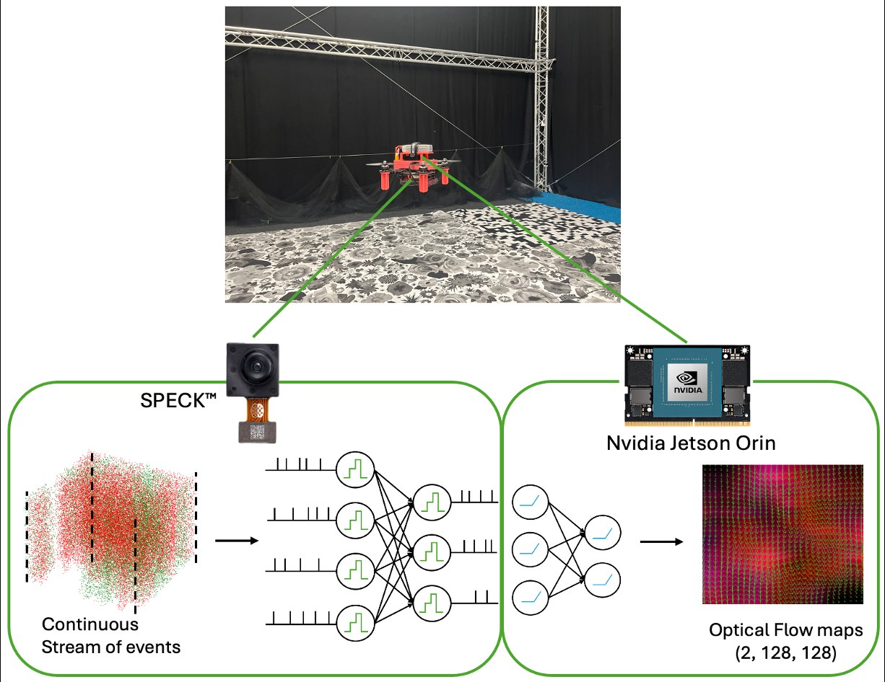
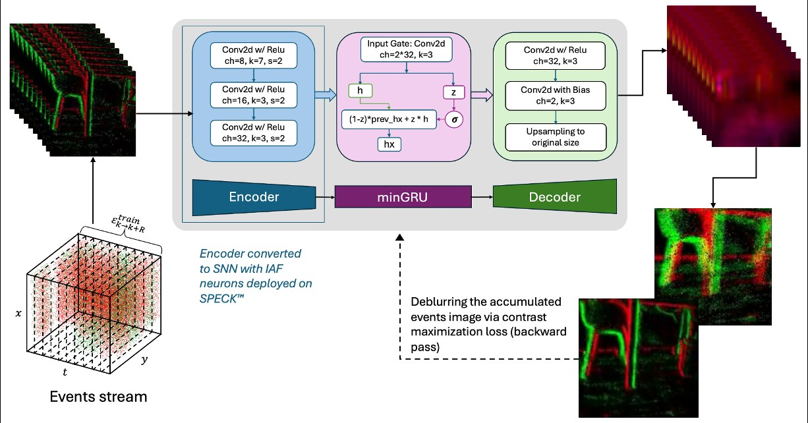

Optical Flow Estimation using Speck Neuromorphic Hardware
Micro Air Vehicle Lab, Faculty of Aerospace Engineering, Delft University of Technology
IEEE International Conference on Robotics and Automation (ICRA) 2026, Vienna

Overview
Small drones have very little room, weight and power for perception. Neuromorphic hardware is a natural fit: event cameras report only the pixels whose brightness changes, and spiking neural networks process those sparse events asynchronously. SynSense's Speck puts a 128×128 dynamic vision sensor and a spiking convolutional processor on a single tiny chip. It is far more constrained than research chips such as Intel's Loihi, with about 0.32 M neurons in 9 convolutional layers and simple integrate-and-fire neurons. Until now it had been used for classification-style tasks such as place recognition and face detection, not for the continuous regression a flying robot needs.
We train a compact encoder–memory–decoder network with only 34.9k parameters. It learns optical flow self-supervised from raw events with a contrast-maximization loss and iterative warping, so no ground-truth flow is needed. Events are binned into 10 ms windows. After training as a conventional ANN, the three-layer convolutional encoder is converted into a spiking network and deployed on Speck. Because Speck cannot run gated recurrence, the minGRU memory and the decoder run on an onboard Nvidia Jetson Orin NX. This hybrid SNN–ANN pipeline turns the event stream into a dense 128×128 flow field in real time.

Results
Moving the encoder onto Speck roughly doubles the end-to-end inference rate compared with running the same network entirely on the Jetson, with no measurable change in power. Flow quality stays close to the full ANN and to heavier ResNet/GRU baselines. When the drone is moved along a square path, the mean Speck flow closely tracks a MicroAir MTF-01P optical-flow sensor (r = 0.88 and 0.80 for the two axes). Unlike that sensor, which gives one global vector, our pipeline gives a flow vector at every pixel.
We then close the loop on a real quadrotor. A PI controller maps the spatially averaged flow directly to roll and pitch setpoints for PX4, with no position estimate. The drone flies forward and holds a 90-second hover with mean body velocities of only a few cm/s. To our knowledge, this is the first closed-loop flight control using dense optical flow from the Speck chip. The code covers data collection, Speck deployment and the ROS 2 flight stack, and it is open source.
Citation
@inproceedings{singh2026speck,
title = {Optical Flow Estimation using Speck Neuromorphic Hardware},
author = {Singh, Manupriya and Ou, Dequan and Hagenaars, Jesse J. and de Croon, Guido C. H. E.},
booktitle = {2026 IEEE International Conference on Robotics and Automation (ICRA)},
pages = {12859--12866},
year = {2026},
doi = {10.1109/ICRA57385.2026.11696264}
}